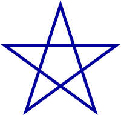
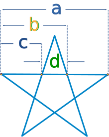

The Pentagram

The Pentagram (or Pentangle) looks like a 5-pointed star.
You may think it has something to do with witchcraft, but in fact it is more famous as a magical symbol and is also a holy symbol in many religions.
In fact, this simple figure is quite amazing.
| Inside a Pentagram is a Pentagon |
You can make a pentagram by first drawing a pentagon, then extending the edges.
Or by drawing lines from corner to corner inside a pentagon.
Polygon
In fact a Pentagram is a special type of polygon called a "star polygon".

Ratios
The regular pentagram has a special number hidden inside called the Golden Ratio, which equals approximately 1.618
- a/b = 1.618...
- b/c = 1.618...
- c/d = 1.618...
When I drew this, I measured the 4 lengths and I got a=216, b=133, c=82, d=51. So let's check to see what the ratios are:
- 216/133 = 1.624...
- 133/82 = 1.622...
- 82/51 = 1.608...
If I had drawn and measured more accurately, I would have been even closer!
Why not have a go yourself:
- Draw a regular pentagram
- Measure the lengths
- Calculate the ratios
Irregular PentagramThis has all been about the regular pentagram (all sides and angles equal), but there are also irregular pentagrams. |